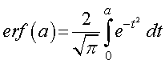
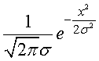
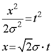
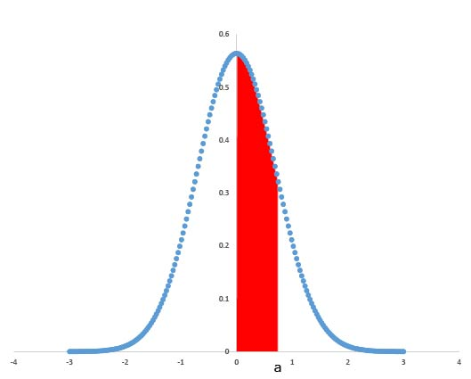

誤差関数と正規分布，ほとんど兄弟のような関係ですが，その対応についてはあまり語られていない気が．．．．
一応，Wikiなどでも，
一連の何らかの測定値が正規分布になっていて、標準偏差が \sigma、期待値が0の場合、1つの測定値の誤差が-aとaの間になる確率は．．．．
と書かれていますが，結構あっさりと．．．
ですので，ここでは両者の対応をきちんと考えていきましょう．
誤差関数とは，

正規分布とは，

であり，誤差関数の指数部分と正規分布の指数部分はよく似ていますね．

とおけば，等しくなります．
つまり，誤差関数とは（私の理解では），
標準偏差が1/20.5≒0.71である正規分布の原点からaまでの領域の割合
と言うことができます．

では，σ，の標準偏差を持つ正規分布の場合，0からaまでの範囲での割合を誤差関数で表してみましょう．